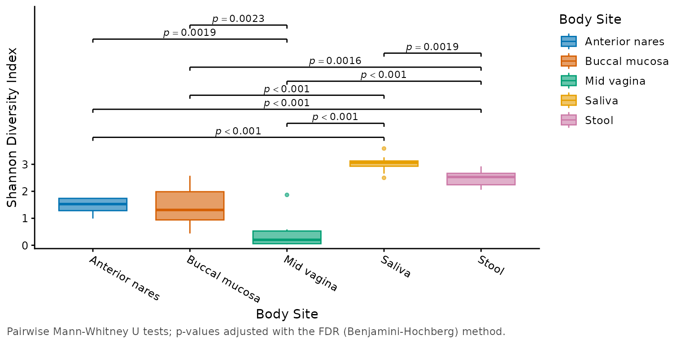
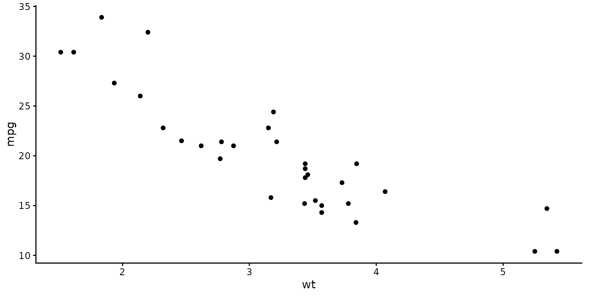
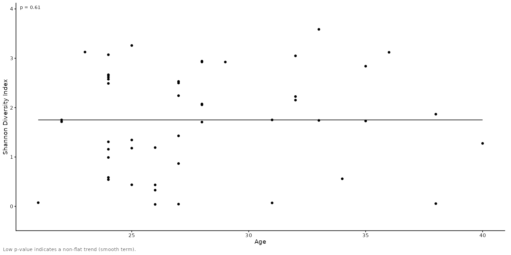

The theme that every rbiom plot uses. It follows common journal figure guidelines: a sans-serif font, black text, open x/y axis lines with outward ticks, no gridlines or background shading, and facet labels without boxes. Titles and captions align with the left edge of the figure, and secondary text (subtitles and captions) is gray.
Usage
theme_rbiom(
base_size = 11,
base_family = "",
frame = "axes",
grid = FALSE,
base_line_size = base_size/22,
base_rect_size = base_size/22
)Arguments
- base_size
Font size in points for axis titles, legend titles, and facet labels. Tick labels, legend labels, and captions are 85% or 80% of this size; titles are 115%. Most journals want 6-8 pt text at the final printed size: for a figure saved at its final width (e.g. 7 inches for two columns), set
base_size = 8. Default:11- base_family
Font family. The default,
"", is the graphics device's sans-serif font: Helvetica forgrDevices::pdf(), Arial on Windows. Default:""- frame
How to outline the plotting area. Options are:
"axes"-x and y axis lines with outward ticks.
"box"-A box around each panel with outward ticks.
"none"-No axis lines, ticks, or axis titles, as in
ggplot2::theme_void()(for heatmaps).
Default:
"axes"- grid
Light gray major gridlines:
FALSE(none),TRUE(both axes),"x"(vertical lines), or"y"(horizontal lines). Default:FALSE- base_line_size
Width of axis lines and ticks, in mm (as for ggplot2's
linewidth). Default:base_size / 22- base_rect_size
Width of the panel box, in mm. Default:
base_size / 22
Value
A complete ggplot2::theme() object.
Details
rbiom's plot functions accept these arguments in their ..., for example
adiv_boxplot(biom, base_size = 8, grid = "y") (heatmaps accept the
base_* ones). Given there, base_size also scales the plot's
annotations (p-values, taxa labels) to match.
The sizes of all text elements are relative to base_size, so the text
of an existing plot can also be resized in one step with
p + ggplot2::theme(text = ggplot2::element_text(size = 8)). The same
works for family.
See also
Other visualization:
adiv_boxplot(),
adiv_corrplot(),
bdiv_boxplot(),
bdiv_corrplot(),
bdiv_heatmap(),
bdiv_ord_plot(),
plot_heatmap(),
rare_corrplot(),
rare_multiplot(),
rare_stacked(),
stats_boxplot(),
stats_corrplot(),
taxa_boxplot(),
taxa_corrplot(),
taxa_forest(),
taxa_heatmap(),
taxa_stacked()
Examples
library(rbiom)
library(ggplot2)
# The theme of every rbiom plot.
biom <- rarefy(hmp50)
adiv_boxplot(biom, x = "Body Site", stat.by = "Body Site")

# Make a ggplot2 figure match.
ggplot(mtcars, aes(wt, mpg)) + geom_point() + theme_rbiom()

# 7 pt text for a single journal column (~3.5 inches wide).
adiv_corrplot(biom, x = "Age", layers = "tp", base_size = 7)
